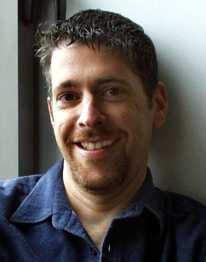

|
 Brad Rubenstein has served on the NYFOS Board of Directors since 1996, and was their Chairman until 2011. He recently founded Red Sand Media Partners, a theatre and film production company. Previously, he has worked on Wall Street as a Vice President at Goldman Sachs, and on the technical staff of computer firms in Silicon Valley. He has a Ph.D. in Computer Science from U.C. Berkeley. As a performing musician, he sang for 12 years with the San Francisco Symphony Chorus, and has also sung with the Sacramento Opera, New York's Dessoff Choirs, and the New York City Gay Men's Chorus. |
Arts; 100 words